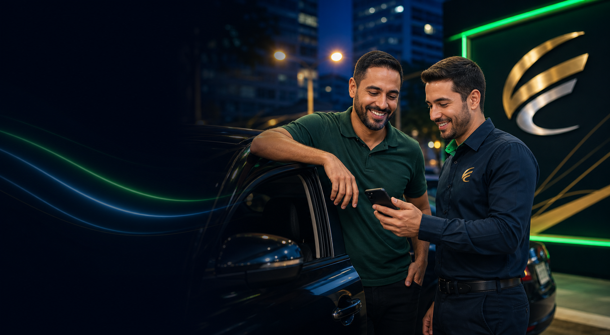

Manutenção preventiva
Pneus, freios, óleo, revisão e itens que evitam ficar sem trabalhar.

Para quem vive de corrida
Quando o veículo é ferramenta de trabalho, manutenção e documentação não podem esperar.
Sem compromisso. Atendimento humano e retorno em horário comercial.
Carro parado custa caro
A CredMais organiza sua solicitação considerando a rotina de quem recebe por corrida, tem renda variável e precisa manter o veículo em operação.
Pneus, freios, óleo, revisão e itens que evitam ficar sem trabalhar.
IPVA, licenciamento, seguro e despesas que precisam estar em dia.
Apoio para organizar combustível, parcelas e imprevistos sem parar as corridas.
A estrutura fala com o motorista de forma direta: o veículo é ferramenta de trabalho, e cada parada precisa ser planejada.
Itens essenciais para segurança, aprovação e continuidade das corridas.
IPVA, licenciamento, seguro e regularizações do veículo.
Imprevistos mecânicos que impedem o carro de rodar.
Combustível, parcelas e despesas enquanto as corridas normalizam.
Jornada na pista
Identificar manutenção, documento ou custo que trava as corridas.
Considerar a rotina de ganhos variáveis do motorista.
Encaminhar a análise e manter o foco em voltar para a rua.
Confiança CredMais
Quem procura crédito precisa de velocidade, mas também precisa entender o próximo passo com segurança.
prazo médio para retorno em horário comercial
rotas separadas para comércio, microcrédito, motoristas e entregadores
simulação inicial pelo WhatsApp, com orientação humana
“Eu precisava organizar estoque e caixa. A conversa já começou no ponto certo.”
Comerciante atendido
“Expliquei o problema do carro e recebi um caminho simples para análise.”
Motorista de aplicativo
“Gostei porque não tive que repetir tudo. A solicitação já foi bem direcionada.”
Entregador parceiro
Dúvidas frequentes
Não. Você informa o perfil, valor desejado e cidade para receber orientação inicial sem compromisso.
Depende do perfil. A CredMais direciona a conversa para comerciante, microcrédito, motorista ou entregador.
Sim. O primeiro contato pode começar pelo WhatsApp, com atendimento humano e orientação clara.
O retorno acontece em horário comercial, geralmente em até 24 horas após o envio das informações.
Simulação
Informe o valor e o objetivo para a CredMais orientar a solicitação.